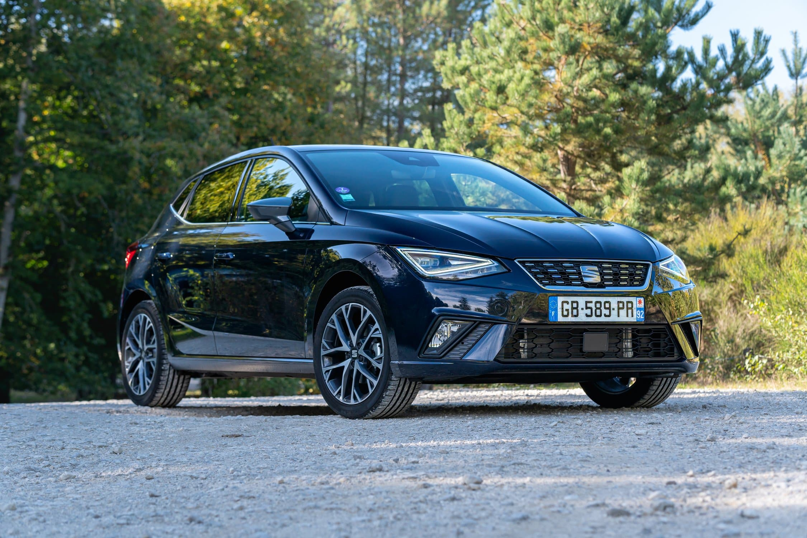

Retour au calculateur et à la liste
des fiches

Seat Ibiza (2024)
Type : Thermique (Essence)
La citadine polyvalente de Seat, reconnue pour son dynamisme et son agilité. Le moteur 1.0 TSI offre un bon compromis entre performances et efficience pour le quotidien.
Caractéristiques Clés
-
Puissance :
110 ch
- 0-100 km/h : 10.0s
-
Conso Mixte WLTP :
5.4 L/100km
- Émissions CO2 : 123 g/km
-
Prix à partir de :
23000 €
- Motorisation : 1.0 TSI 110 ch DSG7
Avantages
- Moteur 110 ch volontaire et économe
- Boîte DSG7 fluide et réactive
- Comportement routier dynamique et agile
- Habitabilité correcte pour la catégorie
- Design moderne et distinctif
Inconvénients
- Qualité de certains matériaux intérieurs (plastiques durs)
- Insonorisation perfectible à haute vitesse
- Suspension ferme sur chaussée dégradée
- Peu de nouveautés majeures par rapport aux générations précédentes